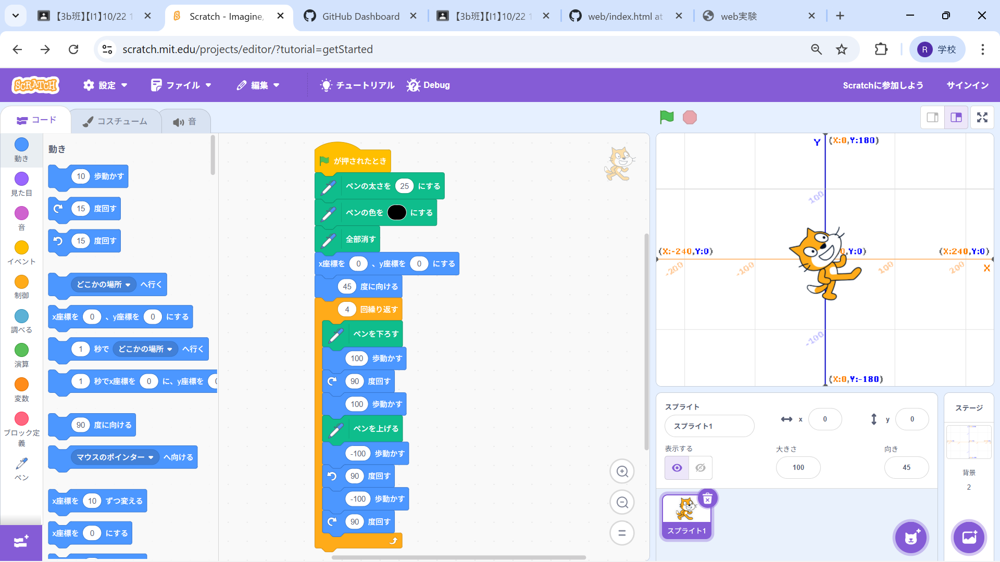
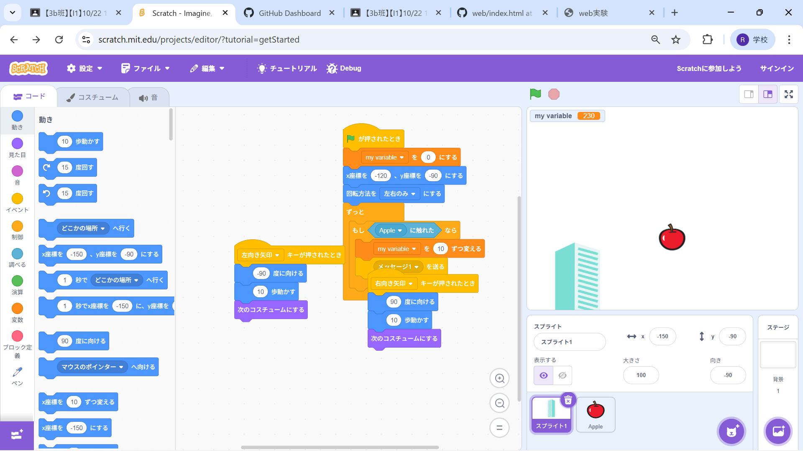

1週目のレポート ： 公大高専１年実習I-1
3b班36番 ニックネーム
第1週目
1-1 サイエンスアート

1.内容
スクラッチを利用し、ラインアートを描画するブロックプログラムを作成した。
同じ処理を、任意の回数繰り返すプログラムを作成することで、効率的に目的を満たすことができると学んだ。
2.感想
「円を描く」プログラムを作成する実践を行ったとき、「たとえばx^2+y^2=r^2のような形の方程式を用いて円を描画することは可能なのだろうか」と
疑問を抱いた。
1-2 ゲーム

1.内容
スクラッチを利用し、簡単な落ちものゲームのブロックプログラムを作成した。
同じ処理を繰り返すループ処理、ランダムな動きを作り出すための乱数の利用、スコア機能追加のための変数の利用などを行い、
これらの機能、プログラムについて学んだ。
2.感想
リンゴの落下速度だけではなく、落下の軌道にもランダム性を持たせたり、
落下速度や軌道、何回連続でリンゴを回収できたかに応じて追加スコアが発生する要素を追加するといいかもと思った。
1-3 ホームページ作成
私のホームページ
1.内容
githubのアカウント作成と、githubを用いたホームページの作成、htmlの編集、画像のアップロード、
ホームページを利用したレポート作成のやり方について学んだ。
2.感想
自分のホームページのイメージは、「サーバーを使って、ポートを開いて、LinuxだとかApacchとかを使って...」
というイメージだったので、githubを利用して小さな設定をするだけでもホームページは作れると知り、衝撃を受けた。
各ページへのリンク
1週目のレポート
2週目のレポート
3週目のレポート
私のホームページ